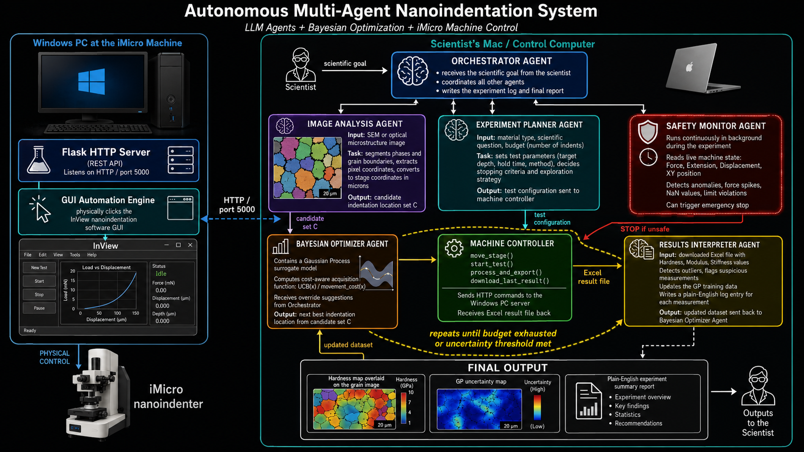

Substrate-effect correction
Quantifying and correcting substrate influence on measured thin-film properties, including depth-dependent error maps and practical indentation depth guidance.
Explore researchCAE-focused PhD candidate with ~3 years of experience building nonlinear finite element models in Abaqus/CAE, including contact and elastic-plastic material response. I design automation-first simulation workflows in Python and MATLAB on Linux and HPC clusters.
Civil & Environmental Engineering · University of Tennessee, Knoxville
Currently Building an autonomous multi-agent system that drives the iMicro nanoindenter end-to-end — LLM orchestration + Bayesian optimization + GUI automation.
A selection of nonlinear FEA models spanning contact mechanics, coupled thermal–mechanical analysis, metal forming, and crashworthiness — built in Abaqus/Standard and Abaqus/Explicit.
3D contact model of an as-measured indenter tip pressed into a bulk specimen. Reproduces the real tip geometry to resolve near-surface von Mises stress fields — underpinning my nanoindentation tip-calibration research.
Full 360° rocket bell nozzle with dual ceramic thermal-barrier coatings over a steel substrate. Sequentially coupled thermal–mechanical analysis resolving the transient temperature field (NT11) and induced thermal stresses.
Actual-size two-roller cold-rolling model of an alloy billet. Captures roll-bite contact, large plastic deformation, and von Mises stress evolution during thickness reduction.
Explicit dynamic ground-impact analysis of a blended-wing-body (BWB) airframe. Models large-deformation structural collapse and transient von Mises stress propagation through the impact event.
Three-sided Berkovich pyramidal indenter driven into a bulk specimen. Abaqus/Standard contact model resolving the sharp-tip stress concentration and the von Mises field beneath the indent — the standard geometry for hardness and modulus measurement.
Profilometry-based Indentation Plastometry (PIP) of an anisotropic material: a spherical indenter loaded to 4500 N. Abaqus/Standard model used to recover direction-dependent plastic stress–strain response from the residual indent.
A focused toolkit built around computational mechanics, simulation automation, and data-driven modeling.
A scientist hands the system a goal in plain English. LLM agents plan the experiment, choose where to indent, drive the machine through GUI automation, monitor for safety, interpret results, and iterate — with Bayesian optimization in the loop. To my knowledge, no one has put autonomous agents in direct control of an iMicro nanoindenter before.

system_architecture.png · drop into Current Website/ folderReceives the scientific goal, decomposes it, routes work to specialist agents, and writes the experiment log and final report.
Segments phases and grain boundaries from SEM/optical images and converts pixel coordinates to physical stage coordinates in microns.
Sets target depth, hold time, method, stopping criteria, and exploration strategy based on material and budget.
Gaussian Process surrogate with a cost-aware UCB acquisition function picks the next-best indentation site from the candidate set.
move_stage, start_test, process_and_export, download_last_result — HTTP commands to the Windows PC, Excel results back.
Continuously reads force, extension, displacement, and stage position. Detects anomalies, NaNs, and limit violations — can trigger emergency stop.
Reads the downloaded Excel, flags outliers, updates the GP training data, and writes a plain-English log entry for each measurement.
Flask REST server (port 5000) plus a GUI automation engine that physically clicks the InView nanoindentation software — no vendor API needed.
Finite element simulation and data-driven modeling for reliable thin-film materials characterization.
Quantifying and correcting substrate influence on measured thin-film properties, including depth-dependent error maps and practical indentation depth guidance.
Explore researchPython-driven Abaqus/CAE pipelines for high-throughput parametric studies with elastic-plastic material models, automated post-processing, and reproducible V&V workflows.
Explore researchNeural networks and deep kernel learning to map load-depth curves back to intrinsic film properties. Surrogate modeling and active learning to improve data efficiency for high-cost simulations.
Explore researchMeasured spherical tip profiles from microscopy integrated directly into Abaqus 2D/3D contact models, reducing experiment-simulation mismatch from ~20% to below 5%.
Explore researchAn LLM multi-agent system that plans, runs, and interprets nanoindentation experiments on the iMicro — with Bayesian optimization, GUI automation, and a live safety monitor.
See the systemSelected work combining high-throughput simulation and machine learning for nanoindentation mechanics.
Automated high-throughput Abaqus/CAE nanoindentation simulations for thin-film/substrate systems across a wide range of property and geometry combinations. Results converted into depth-dependent error and regime maps that provide engineers with practical guidance on indentation depth and film thickness selection to minimize substrate influence and reduce costly re-testing.
An automated FEM + ML correction workflow compensates for substrate coupling and recovers bulk-equivalent properties from indentation responses across elastic-plastic property ranges. Traceable and reproducible pipelines align with industry expectations for verification and process control in materials development and manufacturing.
Measured spherical tip profiles from microscopy are incorporated directly into Abaqus 2D and 3D contact models, replacing idealized geometry assumptions. This reduces experiment-simulation mismatch from approximately 20% to below 5%, enabling reliable property extraction for thin films in electronics, coatings, aerospace, and energy applications.
Short-burst, high-intensity competitions building real scientific tools from scratch under time pressure.
Given raw AFM/MFM binary files from a combinatorial magnetic thin-film library, I built a complete image analysis pipeline from scratch under a 3-hour time constraint — extracting structural and magnetic features and mapping them spatially to identify composition-driven property gradients.
All authors listed as they appear in submissions. * denotes corresponding author.
SSRN Preprint · 2025
SSRN Preprint · 2025
Manuscript in preparation (full draft complete) · 2025
Manuscript in preparation · 2026
Full list and preprints available on request.
Peer-reviewed conference contributions, university seminars, and poster presentations.
USNCCM 18 · Chicago, IL · July 20–24, 2025
Munireach Nannory, Vivek Chawla, Dayakar Penumadu, Timothy Truster. CAMM Travel Award recipient.
ASME IMECE 2024 · Portland, OR · November 17–21, 2024
Munireach Nannory, Vivek Chawla, Dayakar Penumadu, Timothy Truster. Paper No. IMECE2024-150501. Travel grant recipient.
TEAMS 2024 Tennessee Advanced Materials Summit · July 9–10, 2024
Munireach Nannory, Vivek Chawla, Dayakar Penumadu, Timothy Truster.
UTK-MRSEC Center for Advanced Materials and Manufacturing, University of Tennessee, Knoxville.
UTK-MRSEC · 2025
UTK-MRSEC · 2025
UTK-MRSEC · 2024
UTK-MRSEC · 2023
Advanced Materials and Manufacturing, UTK · 2026
Best Poster, IRG2 Poster Competition.
Advanced Materials and Manufacturing, UTK · 2025
Compared mesh refinement strategies, friction sensitivity, and variational surrogate models with active learning to improve data efficiency.
Advanced Materials and Manufacturing, UTK · 2023
Conference presentations, award moments, and research milestones.

MS graduation ceremony, University of Tennessee, Knoxville.

Presenting the FE Nanoindentation Simulation poster at ASME IMECE 2024.

Student of the Year, IRG 2 Graduate Research Assistant (Research Excellence), UTK-MRSEC, 2025.

ASME IMECE 2024, Portland, OR.

Presenting on spherical tip geometry identification for nanoindentation at USNCCM 18.

With advisor Prof. Timothy Truster at USNCCM 18, Chicago.

Certificate of Achievement for outstanding research and scholarly presentation at the student poster session.
Competitive honors and funding received during graduate training.
I am a PhD candidate in Civil and Environmental Engineering (Structural Engineering concentration) at the University of Tennessee, Knoxville, with a 3.97 GPA and about three years of experience building nonlinear finite element models in Abaqus/CAE.
My research focuses on making thin-film nanoindentation more reliable. I develop automated FEM workflows in Python, run high-throughput parametric studies on Linux and HPC clusters, and build machine learning pipelines that extract intrinsic film properties while correcting for substrate-driven error.
I enjoy correlating simulations to experimental results and building workflows that are traceable, reproducible, and easy for collaborators to use. Recently I have been extending this further: building an autonomous multi-agent system in which LLM agents plan experiments, drive the iMicro nanoindenter, monitor safety, and interpret results end-to-end.
I am interested in CAE, FEA, and structural simulation roles — and in research engineering roles where automation, machine learning, and agent-based control can make experiments and simulations dramatically more efficient.
PDF · Last updated 2026
Structural Engineering · UTK · May 2024 – present · GPA 3.97
Structural Engineering · UTK · Aug 2023 – May 2025
Paññasastra University of Cambodia · 2016–2022 · Top-ranked scholar
Institute of Foreign Languages, Royal University of Phnom Penh · 2017–2021
UTK CEE · Aug 2023 – present
Nov 2024 – present · Automated Abaqus workflows, parametric studies, ML inversion
Jul 2024 – present · Depth-error maps, data-driven regime classification
Nov 2023 – 2025 · Microscopy-to-FEM, mismatch reduced to <5%
Abaqus/CAE, nonlinear FEM, contact mechanics, elastic-plastic modeling
Python, MATLAB, automation scripting, data pipelines, Linux/HPC, Git
Neural networks, deep kernel learning, uncertainty-aware modeling, active learning
For collaborations, speaking invitations, or roles in CAE and computational mechanics.